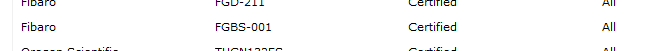

Hi..
first post , please be kind 
Landscape as follows
-Veralite as gateway/controller
-RaspberryPi as OR controller
-Fibaro Universal/Binary Sensor FGBS321 + 4 DS18B20 temp sensors
All working okay - can read and display the temp in the vera UI
Task
Display the 4 temerature readouts in a simple ORC panel on iphone as text
Ive been digging through the forum and no luck on specifics so I dived right in
I can create the panel with some buttons and have it display on my iphone so that part is working (panel and controller sync)
I added the universal sensor as a device (ORC notes that the FGBS001 is supported and I have the FGBS321, not sure of this is an issue, I tried swapping FGBS001 for FGBS321 but no luck)
I created a command to read the temp from that a specific ID of one of the temp sensor
I displayed thevera.xml ot gte the correct ID's for the sensors and confirm that they are working
I then created a sensor and linked it to the command
I then created label to display the temperature readout (I also tried a button but no luck)
I think all the 'connections' are working as I'm getting N/A in the label insteaed of the 'U' which I entered when I created it
....but not getting the temp being displayed
To be honest I'm not clear about the relationship between a command and a sensor and the other elements of the ORC stack for my scenario so I'm not sure even if the appraoch above is correct
Any help would be really appreciated
-frank
{kind=link}
|
Maybe you get the N/A because the returned value is to long (many digits after the decimal point) In my RaZberry application I use a http call to retrieve this temp sensors. I do apply a regular expression to 'tame' the output: [0-9]{0,}[.]{0,1}[0-9]{0,2}
|
|
Thanks Pieter thx |
|
Did you already look at OpenRemote 2.0 How To - Micasaverde Vera? |
|
yep  I didnt manage to get a result from implementing the GENERIC_STATUS solution. I also tried other commands and sensor combinations but no luck there either. I've been reading many of the great docs on the site and forum but haven't been able to find a solution I didn't pursue the HTTP part but if you feel the solution to my proble is in this doc I'll give it another pass thanks again |
|
okay - been doing a little more reading and I think I have the command/sensor part understood Step 1- I need to create a device that represents the Universal Binary Sensor (FBGS-321) three (quick ??) questions... thanks again for all the help/advice -f |
|
I have been looking into this FGBS001 and FGBS321 issue. It hard to find the difference. On the Fibaro site FGBS321 is described as version 2.1-2.3. I got mine as FGBS001, but the enclosed leaflet said it was v2.1 - v2.3 as well. ad 2) Yes place a lable on the UI and use the sensor you created ad 3) If the command you created is an http command, you can try the URL with FF, Chrome, whatever PS: I have no knowledge about the Vera interface. I do use RaZberry to control my Z-Wave devices (not overly happy about that yet) |
|
Thanks Pieter I'll give it another go over the weekend and may even try the HTTP route as I can check that in a browser before invoking the designer. (it would be great to know it's reading the value as it'll verify another few steps) I think the vera is transparent to all this but hopefully I'll verify this over the weekend Thanks |